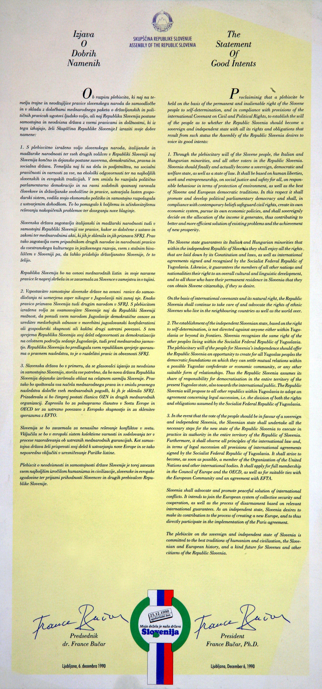

1
PRED
PLEBISCITOM
PLEBISCITOM
STOPILI
SMO
SKUPAJ
SMO
SKUPAJ
Enotnost političnih strank in poslanskih skupin Skupščine Republike Slovenije

Delegati so na seji Skupščine Republike Slovenije 6. decembra 1990 sprejeli Zakon o plebiscitu o samostojnosti in neodvisnosti Republike Slovenije. Takrat je bila podana tudi Izjava o dobrih namenih, v kateri je bilo poudarjeno, da vzpostavitev samostojne države ni usmerjena zoper nikogar v Jugoslaviji niti zunaj nje ter da enako pravico priznava tudi drugim narodom v Jugoslaviji. Neposredno pred sejo skupščine pa so prvaki strank podpisali sporazum, s katerim so se zavezali k skupnemu prizadevanju za uspeh plebiscita in k temu, da si zaslug zanj ne bo lastila nobena stranka.
Sporazum političnih strank in poslanskih skupin Skupščine Republike Slovenije o skupnem nastopu na plebiscitu za samostojno in neodvisno državo Republiko Slovenijo.
Pod sporazum so se podpisali za: Klub delegatov narodnostne skupnosti – Roberto Battelli; Klub neodvisnih poslancev – Franc Gradišar; Liberalno demokratično stranko – Jožef Školč; Liberalno stranko – Vitomir Gros; Slovensko demokratično zvezo – Spomenka Hribar; Slovensko kmečko zvezo – Ivan Oman; Slovenske krščanske demokrate – Lojze Peterle; Socialistično stranko Slovenije – Viktor Žakelj; Stranko demokratične prenove – Ciril Ribičič in Miran Potrč; Zeleno Slovenijo – Dušan Plut in Socialdemokratsko stranko – Jože Pučnik.
Predplebiscitni miting v Ljutomeru.

Zakon o plebiscitu o samostojnosti in neodvisnosti Republike Slovenije.
2. člen
Na plebiscitu glasovalni upravičenci z »da« ali »ne« odgovorijo na vprašanje: »Ali naj Republika Slovenija postane samostojna in neodvisna država?«
Na plebiscitu glasovalni upravičenci z »da« ali »ne« odgovorijo na vprašanje: »Ali naj Republika Slovenija postane samostojna in neodvisna država?«
Glasovanje o Zakonu o plebiscitu.

Izjava o dobrih namenih
(slovenščina – angleščina).
(slovenščina – angleščina).

Razglas skupščine RS.

Razglas Republiške volilne komisije v slovenščini, madžarščini in italijanščini.
Glasovanje na Ustavnem sodišču Jugoslavije.
ZA VEDO
ŽELJNEJŠE
ŽELJNEJŠE

Gradivo »Osamosvajanje Slovenije«, ki ga je Izvršni svet RS obravnaval in sprejel na 40. seji 30.11.1990, Vsebina: Pomen in namen plebiscita, Posamezni vidiki osamosvajanja Slovenije, Aktivnosti po plebiscitu – kopija še pri Vladi RS 1/6

Mednarodne aktivnosti RS v zvezi s plebiscitom.